1. The Learning Problem
1.1. Introduction
theory+technique 多个角度概念 what + why + how + better:
1.2. what is ML?
1.2.1 definetion
observation->learning->skill data->ml->skill
so data is more like observation, will be better. learning skill how to use in data
learning: ml:
skill: improve some performance measure.
1.2.2 Application:
stock data->ML->more stock gain
- Tree Recognition 'define' trees and hand-program: difficult learn from data(observations) and recognize
1.2.3 Use Scenarios
navigating on Mars cannot' define the solution > 一般世界人，都使用的是规则来判定一件事。 high-frequency trading consumer-targeted marketing
1.2.4 key essence of ml
- some underlying pattern to be learned exisits target eg: predict whether the next cry of baby
- but no easy definition ! eg: determining whether a given graph contains a cycle
- this is data about the pattern eg:whether the earth will be destoryed
1.3. Learning Problem
- Daily Needs Food Clothing Housing Transportation
- Education
- Entertainment
1.4 ML vs DM,AI,Statistics
from f -> ML -> g. 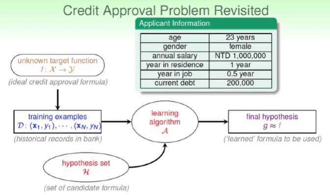
ML vs DM 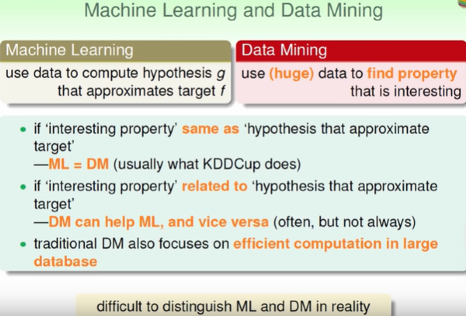 DM can help ML, and vice versa. efficient computation
ML vs AI 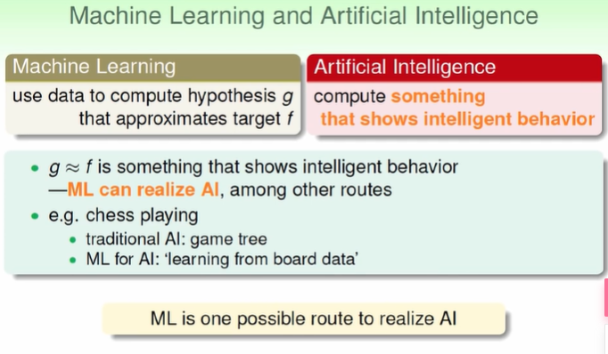
ML vs Statistics(inference ) 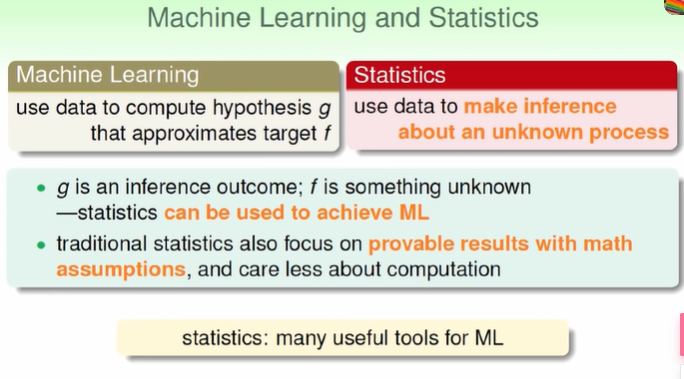
2. Learning to Answer Yes_No
2.1 Example
PLA算法设计
设计思想 知错能改，纠正错误的思想. 图形结合法来求解 类别 局部
步骤 线性函数，感知机。 修正参数，w_{t+1}在错误案例上进行修正。 > 知错能改法 > Cyclic PLA,简单的检查是否还有错误。 > 对数据饶一圈，让这第100个人都没有犯错
PLA算法的正确性
假设 1. 问题具有最优解 2. 样本真实，没有噪声
收敛到最优解
算法会停止（求迭代轮数）
PLA用图形的夹角来做。P8
PLA是否可学习？ 判断两个数是否接近？ 做累积，两个向量内积越来越大
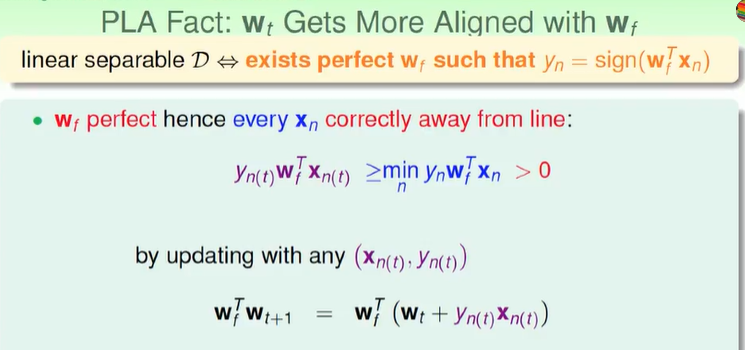
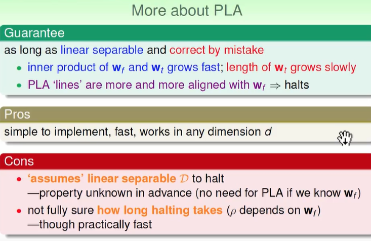
资料是否是线性可分？资料这里是指D，还是实际分布
从某种分布上来说，未知资料是否线性可分。
理论这里对吗？就是是否线性可分 ## 2.2 Learning with noisy data
待测数据上有噪声 假设犯错率很低，那么假设没有犯错率
假设没有噪声，但不知道是否可学习怎么办？ 试图去找犯错误最小的。 NP-hard
科学家的做法：找不到全局最好的解，所以考虑使用贪心。 Pocket Algorithm，在自己的口袋保留最好的算法，根据步长随机更新的思想。 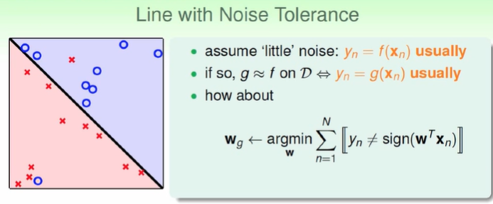
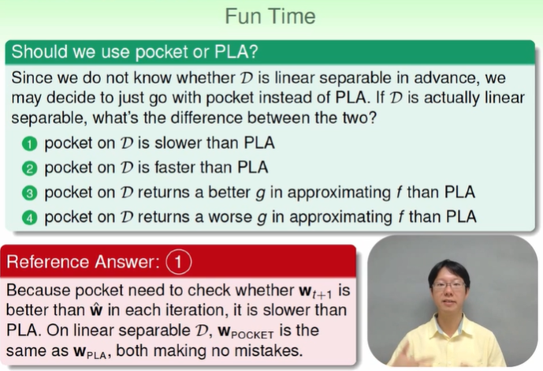 > 因为是最优算法所以返回的结果必然都是最优的。对于算法的比较，记住一定从时间复杂度上看。 还有一旦是线性可分，那么就意味着算法都可以不犯错。
3. Types of Learning
v1 输出空间角度
- binary classification
- mulitclass classification
- 回归问题 > 对于有限的复杂的输出可以看作是多分类问题
- 结构学习问题：比如学习蛋白质的长相，讲的话的语法树（输出空间中具有某种结果） > 其实从某种意义上也是划归到多分类上去。 ## v2 资料的角度
- 监督学习: 完全是有标记样本
- 非监督学习: 未标记样本，分群 > 监督可以看作是没有答案 > 聚类，文章主题
- density estimation: {x_n}
- outlier detection: > 难衡量好坏，因为没有目标
- 半监督学习：有标记样本+未标记样本。
- 强化学习: 不断强化，给予惩罚和奖励；不断学得最终的目标。 > 喂给机器资料，对机器进行评价，好还是不好 > partial/implicit information
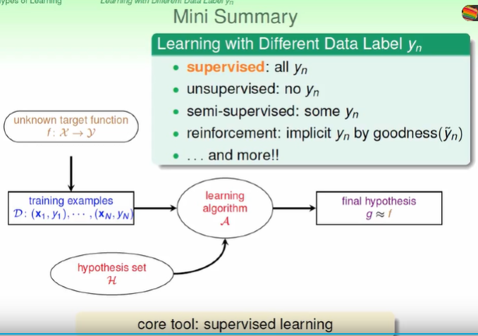
v3 取得样本的方式，学习的角度
- Batch Learning
- Online learing
- active: "question asking" --query the yn of the chosen xn > 有技巧地问问题，可以用很少的问题学习到很多的东西。标记很贵的情况。
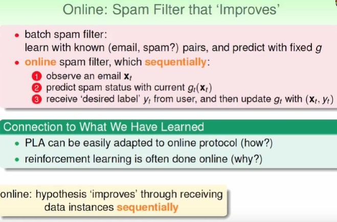
v4 特征的角度
二维向量：对称性、密度性 - concrete - abstract 客户的编号，实际就是一种抽象了。 - raw 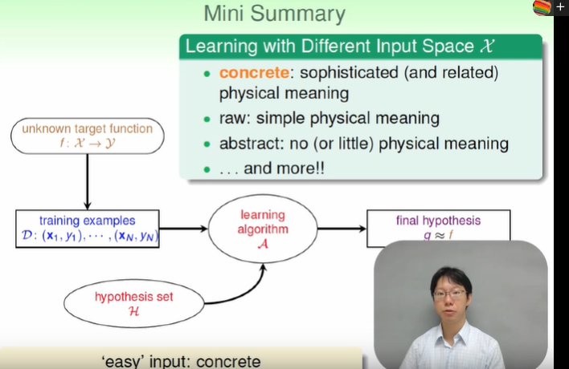
如何找一个最合适的特征
至少可以从这些分类中寻找一个感兴趣的东西 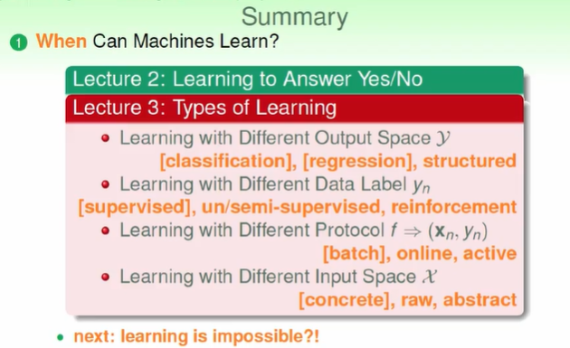 # 4. Feasibility of Learning
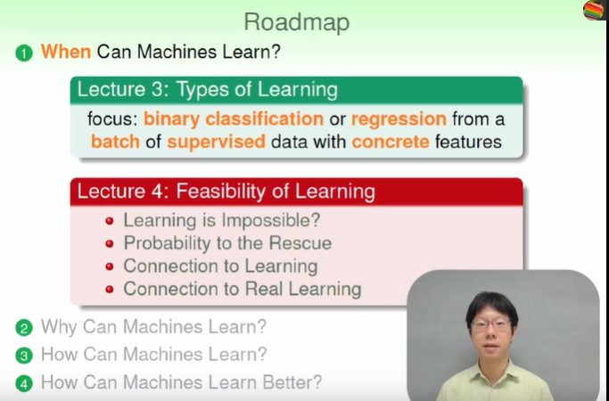 ## 4.1 Learning is impossible? adversarial teacher > 此时如何学习？ > 有什么问题？目标不唯一 > 这也是为什么 > No free lunch, 我们坚持的是什么？如果我们坚持f不知道，我们要在D之外学到东西是不可能的。f一定是定下来的，否则是无法解决。再理解
这个道理很常见，就像是猜数一样，一定要目标一定才可猜。
这也是为什么要用机器学习算法的原因，一般地话，为什么要有测试集，就是试图用测试集来衡量训练误差。
还有对于某些题的设定有问题，这其实就只是一种解释，需要更多的解释来完成这个问题 ## 4.2 Inferring Something Unknown can we infer something unknown in other scenarios? 随机采样，这就是为什么要用采样了？ 参数估计，大数定理。 数学上的定理Hoeffding，相差很远的可能性很小；特别是当样本够大，得到的估计趋于真实的估计。 注意这里两个方面，看多个变量 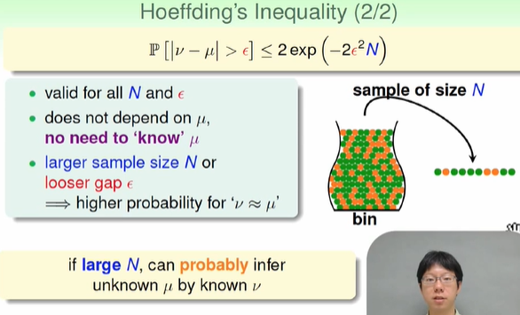
从瓶子里去橙色球和其他颜色球，怎么知道原本中含有多少橙色球？一个想法就是通过对瓶子 的球进行采样一定数量，那么，根据采样的数量来就可以来估计真实的值。
4.3 Connection to Learning
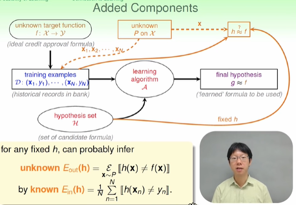
注意，这里考虑了假设空间和问题空间是一致的。 与学习之间的联系。首先我们有一大堆的假设，并从这些假设中抽取一个假设作为真实的假设。 然后，根据这个假设我们就需要得到未来的函数。那么，想法就是从满足这些假设的数据中独立同分布地抽取多个数据。 首先，数据如果足够多，利用这些数据学得的假设，并且，我们有理由相信从这些东西中学得的假设。 在数据集特别大的情况下，来学习得到的假设会更好，更满足实际的情况。
测试数据从某种意义上的设置就是想得到怎么样的数据？ > 但是一般来说测试数据都是中肯的 还有一个方面就是用来纠正学习到的模型，因为学习到的模型有时候是过拟合的，即可解释为泛化能力。
Verification of One h
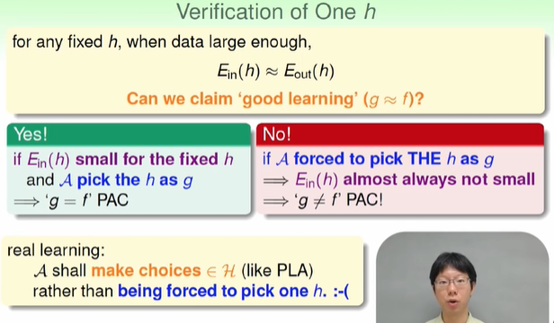 > 这里比较了real学习和根据经验误差来学习的差别。
算法总是得到相同的假设，由此可以觉得该算法不好？ > 假设空间小就意味着算法不好吗？ > 经验误差小就意味着算法好吗？从某个方面可以这样看
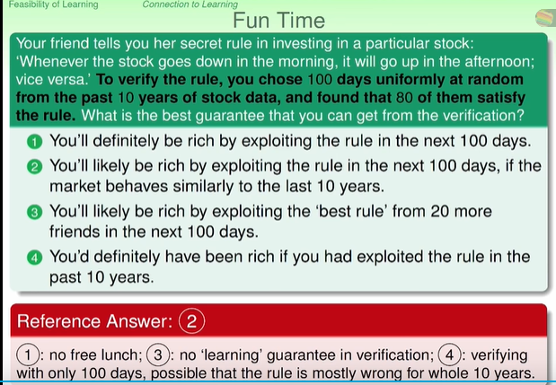
ML学得的规则，不一定对过去有效，因为只是过去的抽样数据；不一定对将来有效，因为有一定误差的存在；在未来一百天中选规则也不成，因为构不成学习，不过是很多规则的累加
4.4 Connection to Real Learning
bad sample: E_in and E_out far away--can get worse when involving "choice".
注意，数据的合理性，即样本是否合理。从某种意义上来说，需要看样本是否满足一些基本的分布，详细见西瓜书。 就是说所选取的样本是不好的样本，从另一个角度来看，就是一个指导的感觉就是还是说的是独立同分布的问题，即是否满足独立同分布。
训练的样本不是好的样本，这是一个检查的标准。
什么是Bad Sample 这个和过拟合有关吗？ 好的数据任意进行选择就可以。 但是坏的数据会使算法踩到雷，算法得到不好的结果。
分析：假设对于每个假设都有bad example, 那么如何。
就是需要选取某个数据集，所有假设基本上都不会踩到雷。
评价，只要有一个不好就认为不好。 那么，不好的数据集的大小是多少？ 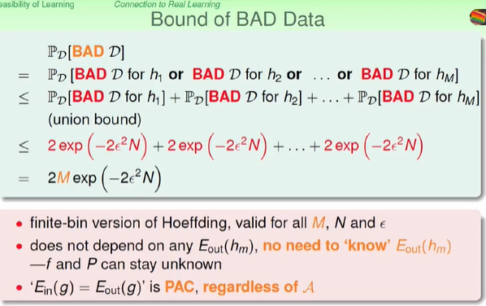
M是假设的个数。
结论：只有样例过多才能满足要求； 现实的指导意义：只有尽可能地将数据认为是正反例合理的情况，否则其他不合理。
所以，当数据合理时，我们认为满足PAC，此时Ein=Eout, Eout就是在未知数据集上的表现情况；注意这里还未引入泛化误差的概念。那么，实际上就是选经验误差最小的，因为经验误差在这里认为是等于泛化的。
而泛化误差是用来进行评价的。
到此为止，说明了假设空间为有限的情况，并未扩展到假设空间为无限的情况。
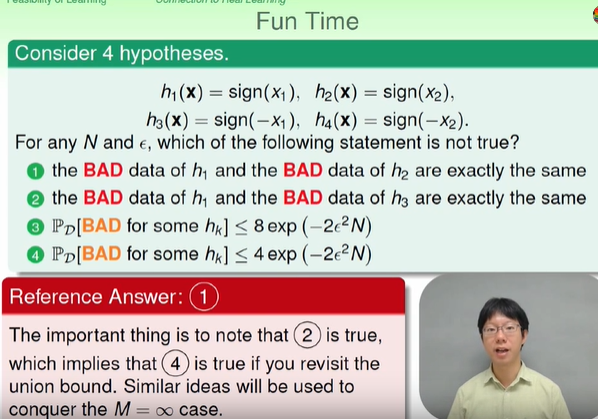 > 理解！